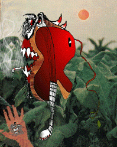

THE ATMOSPHERE IS A LITTLE LIKE A SUMMIT after a break-up. There's no sign of the spark of our courtship. "Ahem, Mick. I was of course a little sore at your absence all summer." The pretty boy band leader is fresh and flustered as a just-plucked fruit, beestung lips pursed in somewhat smarmy and impatient indifference.
"Been busy as a beehive, Beelzey. I knew you'd understand. Look, we had a really nice tribute to you on the last record--plus that one about fighting in the streets. And we're really going to give you a pretty kiss or two on Let it Bleed, you'll see. Rape, murder, and one with your ol' Boston buddy, the fellow with a thing for choking whores."
"Don't think I'm not infernally appreciative of these tokens, Mick. But you were supposed to come around and see the old man every now and then, talk about prospects, your bright and descendant future."
He's not looking at me, considering instead with an absent expression my replica Bosch, a detail of the triptych cropped to feature my favorite, dextral panel. "It's just . . . listen, Luce, you got a little weird, you know, with that onstage appearance idea. That was never part of the deal."
"Of course. I know that caught you by surprise. But you could at least write." Almost a pout from trademark lips to brow, now. It smarts to see him like this. My Mick. Like the prodigal son of his anti-biblical ballad, only Lucifer, yours deviously, is the scorned dad. "So how's the tour going? Good to be back?"
"Fine."
"And there'll be a free show, too, no? A little response to Woodstock."
"Oh, it's nothing. Just something we're cooking up for a few freaks in San Francisco before we jet. An excuse to make a movie."
"Don't fret, Mick. I'm not nearly as photogenic as you fellows. I promise I'll confine myself to just another member of the crowd."
He's relieved, like a kid who's embarrassed of his parents told they won't be chaperons at the dance after all. Mick even delivers a token, in his patronizing tone actually a blow: "Oh, well if you want to stop by be sure to come backstage. I'm sure the Angels will let you through. Heh heh." The lone Stone leaves in a hurry, fooling himself that he's paid his dues and old man S'tan won't be bothering him soon. He doesn't know the tarnished rule: trick Satan once, shame on you; trick Satan twice, blame on you.